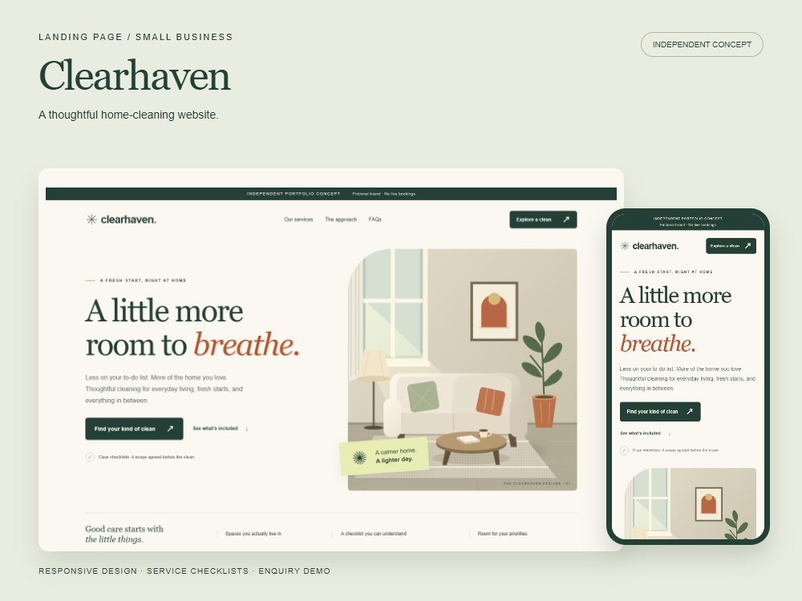
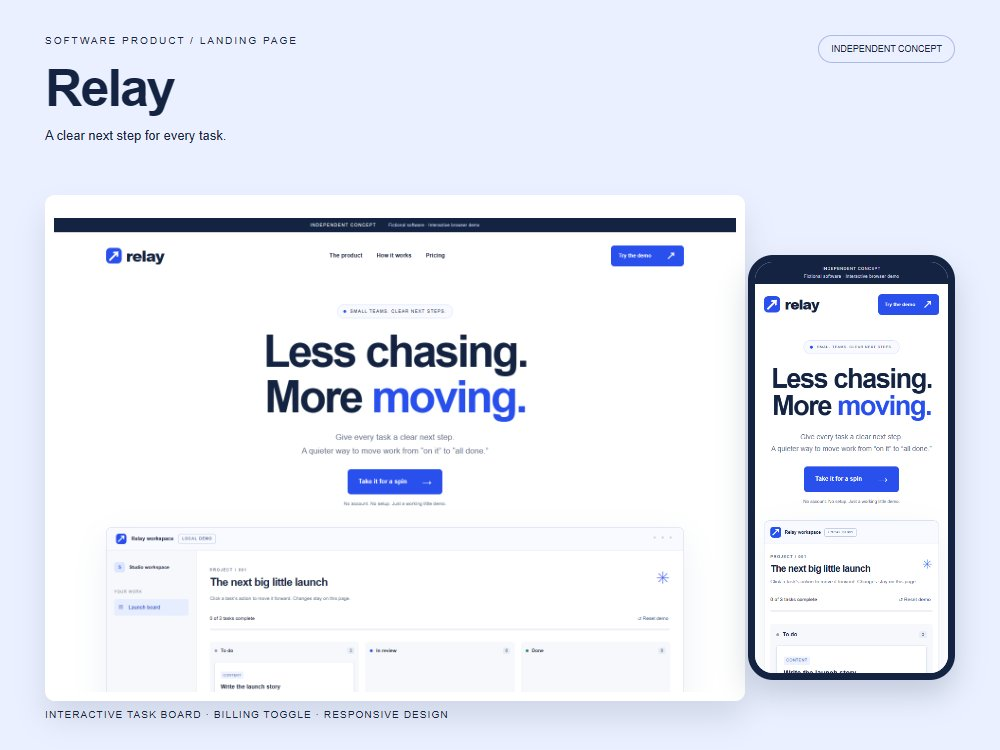
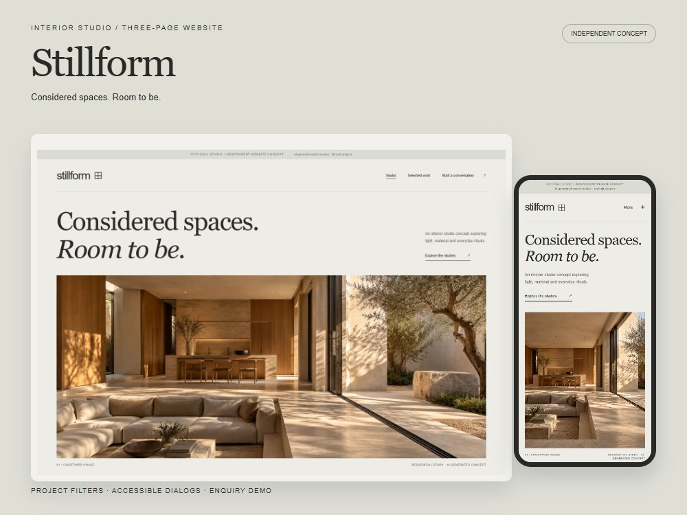

Clearhaven
以家政服务为概念，组织服务清单、常见问题与询价流程，展示一个小企业如何清楚介绍业务。
服务介绍 · 常见问题 · 本地询价预览
打开完整网站AI 辅助设计与前端制作
从服务介绍到产品演示，再到多页作品展示。打开案例，可直接体验页面与交互。
以下均为自主概念作品，品牌与业务为虚构，无真实客户委托或经营成果。表单仅作浏览器内演示，不会发送信息。

以家政服务为概念，组织服务清单、常见问题与询价流程，展示一个小企业如何清楚介绍业务。
服务介绍 · 常见问题 · 本地询价预览
打开完整网站
以团队任务管理工具为概念，将产品说明与可操作的任务板结合，让访问者直接体验简单流程。
任务状态切换 · 进度统计 · 月年价格切换
打开完整网站
以虚构室内工作室为概念，用三页网站呈现空间研究、项目浏览与咨询流程。空间图像为 AI 生成。
项目筛选 · 详情弹窗 · 手机导航
打开完整网站